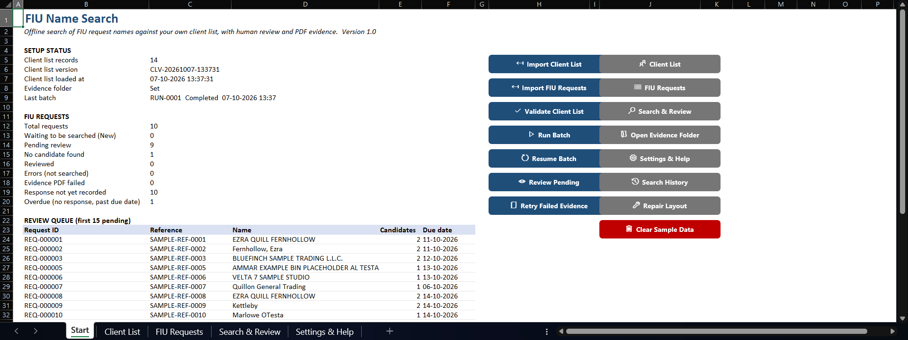
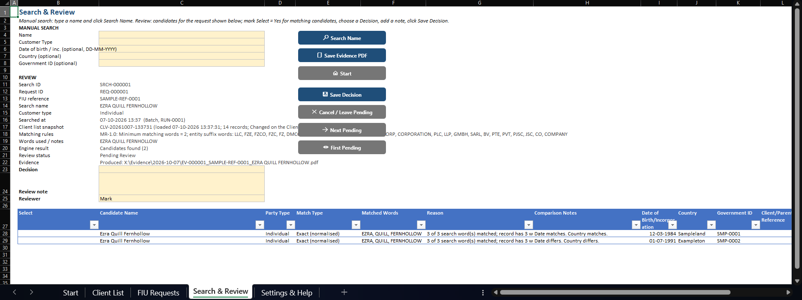
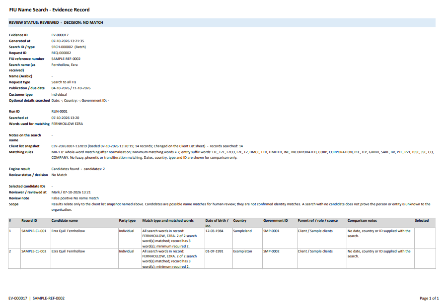

FIU Name Search
An offline Excel tool for searching names from FIU requests against your own client list, recording a human review decision for every possible match and saving a PDF evidence record for every search.
Free · Windows Excel desktop · Includes a blank workbook, a demo workbook with fictional data, full VBA source, README, test report and license. Unblock the zip before extracting (how).
SHA-256 of FIU_Name_Search_v1.0.zip:
92b0f584600dcb98fba7e9caf3653f146bad470996d5cae3cd884aed52a41234


What it does
- Your client list, offline: paste it in, or import from Excel or CSV with header mapping. Each search records which client-list snapshot it used.
- FIU requests: paste or import them. The FIU's standard column names map automatically. English and Arabic names are supported.
- Batch search: searches every new request once, with pause, cancel and resume.
- Human review: every possible match waits for a person to decide: Name Match, Partial Name Match or No Match, with a written note.
- PDF evidence: one for every search, including zero-candidate results and pending reviews. Never overwritten.
- Audit trail: stable IDs for requests, searches, candidates and evidence. Reruns keep the earlier search, decision and PDF in history.
- Response tracking: record your response status and date separately from screening.
- Your data stays with you. The workbook sends nothing anywhere and connects to no portal, email system or cloud service.




What a result means
- A candidate is a possible name match, not an identity match. Every candidate needs human review of dates, country, identifiers and other information.
- "No candidate found" is an engine result, not a conclusion. It only covers the client list you loaded.
- Whole-word matching only. No fuzzy, phonetic or transliteration matching: MOHAMMED does not match MUHAMMAD, and English and Arabic names are not cross-matched.
- It does not respond to the FIU. Any response is made by you through the official channel.
Full detail: SCOPE_NOTE.md.
Requirements
- Windows desktop Excel 2021 or Microsoft 365, 32-bit or 64-bit, with macros enabled.
- Runtime-tested on Microsoft 365 64-bit. Excel 2021 and 32-bit are supported by design but were not runtime-tested (test report).
- Not supported: Excel for Mac, Excel for the web, Excel 2019 or older.
Set up in 5 steps
- Download the zip and unblock it before extracting (see below). Try
FIU_Name_Search_Demo_v1.0.xlsmfirst: click Run Batch and review the sample results. - Open
FIU_Name_Search_Public_v1.0.xlsmand click Enable Content. Load your client list with Import Client List, or paste values into the Client List sheet, then click Validate Client List. - Load requests with Import FIU Requests, or paste them into the FIU Requests sheet.
- Click Run Batch and choose an evidence folder when asked. Every request is searched once and gets a PDF.
- Click Review Pending, mark matching candidates, choose a decision, write a note and click Save Decision. Then record your response in the Response Status and Response Date columns.
Unblock the download
Windows blocks macros in files downloaded from the internet. This is a normal security feature. Do this once:
- Right-click
FIU_Name_Search_v1.0.zipand choose Properties. - On the General tab, tick Unblock, then click OK.
- Extract the zip. Everything inside is now unblocked.
On a work computer, your IT team may block internet macros completely; ask them rather than changing security settings yourself. Every line of code is in the src folder as plain text for review. Full guide: HOW-TO-UNBLOCK.md.
Disclaimer
Free, unofficial tool provided as is, without warranty. It is not legal, regulatory or compliance advice and does not decide whether any person or entity is a match. It does not replace your organisation's AML/CFT policies, procedures, screening systems or the judgement of your compliance officer or MLRO. You remain responsible for FIU response deadlines. Before entering client information, confirm your data-protection policies allow it. This is a personal project, not affiliated with any employer, firm, FIU or regulator. Full disclaimer.
License
Creative Commons Attribution-NonCommercial 4.0 International (CC BY-NC 4.0). Free to use and adapt for non-commercial purposes with attribution. License text.
Changelog
1.0 · 7 October 2026
First public release: offline client-list snapshots, whole-word matching engine, batch search with pause and resume, human review, PDF evidence for every search, Search History and response tracking. Full changelog · Full README.